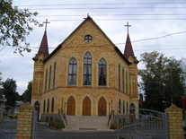

| ЦЕРКОВЬ ЕВАНГЕЛЬСКИХ ХРИСТИАН «БЛАГОВЕСТИЕ» - Немчиновка |
|  | История церкви ЕХБ «Благовещение»:
Данный текст написан со слов и по согласованию Пастора церкви Епишина Николая Ильича.
Я родился на Брянщине, в крестьянской семье. Мой отец, Илья Тихонович Епишин, был пастором у Евангельских Христиан. Это было как раз во время войны, 11 ноября 1944 года. В детстве я уже слышал о Боге. Библия – это была редкость. У нас была в семье одна единственная библия, и мы могли её читать только по очереди. Но уже с детства я знал библию. |
|
Наша церковь, в посёлке «Прогресс», где я родился, была построена в 1945 году. Это было очень
сложное время. Отцу удалось с огромным трудом «выбить» участок земли под строительство церкви.
Но на колхозном правлении приняли решение не давать транспорта на строительство молитвенного
дома. А в то время это были в основном лошади,
И отец принял решение научить корову возить строительный материал, запрягать как лошадь. У нас была большая семья, четырнадцать детей, и корова была кормилицей. Мы питались её молоком. С её помощью они привозили строительный материал, и построили молитвенный дом. После этого корова перестала давать молоко, зато все дети остались христианами. В нашем роду отец первым построил христианскую церковь. Это был первый шаг, действие Божьей благодати в моей жизни. В 1961 году во времена Хрущёвской эпохи начались репрессии на христиан и разрушение храмов в России. Мне было семнадцать лет, когда было принято решение разрушить молитвенный дом. На моих глазах ломали этот дом. Решение было принято председателем сельского совета, председателем колхоза, и парторгом. Три человека приняли решение разрушить церковь построенною с таким трудом. И в тот момент, когда разрушали церковь, я принял решение – быть христианином. Хотя понимал, что в то время быть христианином это, значит, перекрыть себе всякое продвижение. И в институт не поступишь, и не найдёшь нормальную работу. Но всё-таки понял, что быть на стороне христиан – это справедливо. И я принял решение. Церкви уже не было, и я там же, на реке нелегально принял крещение. Это было в 1964 году. После этого, в 1964 году меня забрали в армию. После армии я приехал сюда в Москву и возглавил подпольную работу среди христианской молодёжи в центральной баптистской церкви в Москве. Это была единственная церковь. Это было сложное время. Нас начали преследовать. Нами заинтересовалось КГБ. Вызывали, допрашивали, склоняли к сотрудничеству с ними. Когда я отказался, они начали вплотную преследовать. Где б ни собирались, на квартире или в лесу, маленькими группами, нас находили и арестовывали. За мою жизнь, меня раз двадцать арестовывали в советский период за работу среди молодёжи. Помню, в последний раз меня вызвали в КГБ, это было конец 80-х годов, они опять склоняли меня к сотрудничеству, я отказался. Тогда они поставили мне три условия – ты никогда не будишь учиться в духовных заведениях, ни в колледже, ни в семинарии. Мы тебе не разрешим. Второе – ты никогда не поедешь за границу. Мы тебе закроем всякий выезд за границу. И третье – никогда не позволим тебе быть пастором. Но удивительно, прошло некоторое время и всё изменилось. Бог принял своё решение. Я не знаю, куда они исчезли, но я закончил, когда разрушился Советский Союз, Богословский колледж, получил звание магистра Богословия, часто ездил за границу, и работал пастором. Хотя это было не в их планах, и они планировали, что никогда не позволят мне этого сделать. Но Бог свершил своё дело. В 1987 году ко мне приехали братья из Одинцово - Владимир Гусев и Николай Илькин. Они пригласили меня сюда, в Одинцово, где была небольшая группа верующих. И попросили помочь им в организации церкви. Мы начали собираться здесь, недалеко от Трёхгорки, там жила семья двух пожилых женщин. Они предоставили нам возможность проводить служение в своём доме. Через некоторое время мы создали двадцатку и получили возможность зарегистрировать церковь в Одинцово. Двадцатка – это собрание из двадцати верующих, которые предоставляют данные о себе: адрес места жительства, паспортные данные и согласие на создание новой церкви в этом районе. Мы создали двадцатку, получили регистрацию, и начали собираться в Одинцово в однокомнатной квартире у одной женщины, верующей, Анны Ивановны. Анна Ивановна недавно отмечала в церкви своё восьмидесятилетие. И начали ходатайствовать о том, чтобы нам предоставили место или сдали в аренду участок земли для строительства молитвенного дома. Но в те времена власти не очень содействовали этому, они решили любым путём избавиться от нас, убрать с территории Одинцово. И нам предложили три участка: недостроенный дом на Трехгорке, в Немчиновке, в трёх километрах от платформы, и третье в том самом месте, где мы сейчас собираемся, на улице Амбулаторная, 53. Когда мы посмотрели, то приняли решение остаться на Амбулаторной, 53. Местные власти с боем дали нам домик, находящийся в аварийном состоянии, откуда выселили жильцов. Площадью шесть на четыре. Вот, дескать, и этого не надо бы было давать. Вот такое было у них отношение к нам.… И с 1987 года мы начали собираться в этом домике. И первое служение мы провели здесь на Пасху в 1987году. Мы начали постепенно развиваться, был избран Церковный совет, избрали помощников в работе, двух дьяконов Сергея Даниленко и Николая Илькина. Ещё избрали одного пастора, Колесникова Анатолия. Он был вторым пастором, и было два дьякона. Я пригласил моего друга, Захарова Юрия, возглавить хоровое пение. И в этом небольшом домике началось развиваться хоровое пение. Постепенно церковь начала расти. Летом 1988 года состоялось первое крещение на озере в Немчиновке. Когда мы обратились в администрацию с уведомлением о проведении крещения и просьбой обеспечить нам охрану, руководство района потребовали у меня список крещаемых. Я отказался, объяснив, что это не дозволено. По нашему уставу мы не обязаны предоставлять вам данные и фамилии крещаемых. Они начали угрожать, сказали, что не дозволят проводить крещение. Но, несмотря на угрозы, мы провели крещение. Крещение происходило в разгар дня. Пока крестили тридцать душ, на озере собралось около тысячи человек из Немчиновки, Новоивановского, Одинцово. Всё озеро было запружено людьми. Это было первое крещение, которое мы совершили здесь, и там же на озере мы провели призывную проповедь и там же на озере были покаяния. С тех пор церковь начала активно расти. Когда в 1987 году меня избирали на служение Пресвитера, представитель с исполкома очень возражала против моей кандидатуры. Она сказала или мы вас закроем, или ищите другого Пресвитера. Но церковь настояла на своём мнении, и меня избрали Пресвитером. Постепенно началась оттепель к христианству. Это был уже 1988 год. С 1989 года была уже полнейшая свобода. Каждый год было крещение, мы приглашали христиан на крещение, присутствовал духовой оркестр из Брянска. Мы даже проводили шествие от церкви до озера с духовым оркестром. Церковь продолжала расти. Мы начали делать пристройку, сделали длинный барак, дошли до самого забора. Но мы уже не вмещались в том здании. Мы подали ходатайство на постройку молитвенного дома. В то время был совет по делам религии. Туда мы написали письмо. Нам дали разрешение на строительство. Мы обратились в исполком города Одинцово, и они пригласили сюда архитектора. Когда архитектор приехал сюда и посмотрел на наш эскиз проекта, он сказал: - Да вы что! Здесь рядом проходит правительственная трасса. Когда они увидят вашу церковь рядом с ней, меня с работы снимут. Я не даю разрешение. И удивительно, что он потом, подумав, предложил: - Давайте немножко отступим от дороги. И предоставил нам второй участок, где сейчас построен Храм. И с его лёгкой руки к участку в восемь соток нам добавили тридцать соток дополнительно. И мы получили разрешение на строительство молитвенного дома. До того, как мы получили разрешение на строительство, у нас на этом месте был склад с литературой. Там было около шестисот тысяч книг: Библий, Евангелий, много детской литературы, христианских брошюр. Поздним осенним вечером в 1992 году склад подожгли. Так мы и ушли не солоно хлебавши, тем более что и в карманах-то на тот час было пусто. Но мы не отчаивались – мы молились. И вдруг через два-три дня – звонок от того сурового начальника: - Ребята, когда и куда кран подогнать? Мы отвечаем ему: - Да мы и денег-то ещё не подкопили. - Не надо никаких денег. Поможем безвозмездно! Трудно переоценить ту помощь, которую нам оказали механизаторы. А от денег и в самом деле отказались. Дескать, дело Божье, не станем мелочиться. Что это, если не вмешательство Всевышнего? И подобных примеров – множество. Я помню, когда мы уже начали строить, нам возили кирпич из Минска по доступной цене. Когда нам понадобились колонны для строительства, я поехал в одну строительную организацию. У них готовые колонны были в излишке. Я поговорил с прорабом, и он дал добро забрать их. Когда подъехала машина и мы, погрузив колонны, собрались уезжать, один из рабочих потребовал плату за то, что он показал, где прорабская. Я ему объяснил, что мы строим Храм, но он всё равно потребовал плату за помощь. Я заплатил ему. Но когда мы собрались уезжать, он догнал нас и сказал: - Забери деньги назад. Лучше помолись за меня. Я помню, когда мы заканчивали стены, и нам нужен был материал, сделать фермы для крыши. Материал стоил очень дорого. Я просил помочь, спрашивал, где найти подешевле. Мне дали адрес одного строительного управления. Когда я приехал, это было около Метро «Щукинская», там было написано «Строительное управление при Российской Федерации». Я подумал, что здесь нам точно не помогут. Я сказал, что мне нужно встретиться с начальником строительного управления, что я пастор церкви. Нас пропустили без очереди. Когда мы вошли к нему и сказали, что нам нужен материал, он всех попросил из кабинета и сказал нам: - Братья, вы мне о Боге расскажите. Я только приехал из Израиля. Я всю жизнь прожил в семье атеистов. Мы стали ему рассказывать о Боге. Он молился вместе снами, каялся. И попросил: - Принесите мне Библии, я буду раздавать их здесь. И он помог нам. На строительство крыши он дал нам материал бесплатно, не взял ни копейки. Вот так мы строили Храм. Мы не имели средств, молились Богу, и Бог помогал нам в строительстве Храма. Я хорошо помню, когда мы особо нуждались, одна верующая пенсионерка принесла около 1000 долларов. - Возьмите, это мои пенсионные сбережения. На святое дело не жалко. Как видите, нас поддерживали не богатеи, а простые люди – малоимущие или просто бедные. Как раз накануне было принято решение продать всю литературу и на эти деньги начать строительство храма. Это было в воскресенье, а в понедельник склад с литературой подожгли. Я терялся в догадках: чьих же рук это дело? У следователя тоже отпадали одна версия за другой. А тут ещё письма с угрозами по почте пошли. Неизвестные требовали, чтобы я оставил церковь в течении десяти дней. Иначе они расправятся со мной и моей семьёй. Однако Господь мне говорил: «Не бойся, ибо Я – с тобою» (Ис.41,10). Это потрясающее обетование поддержки всем нам, когда нас мучает страх или тревога. А тревога, чего греха таить, всё-таки была. Крепко тогда поддержали меня жена Ольга, дочь Елена. Да и в церкви мы тогда очень много молились друг за друга. За нас усердно молились и в других церквях и малых группах. Все мы тогда особенно прилежно размышляли над Словом Божьим, стараясь понять Его волю. И Господь не стал медлить с ответом. Как-то на разборе Слова прозвучало: «Вместо пепла дастся украшение, вместо плача – елей радости, вместо унылого духа – славная одежда» (Ис. 61,3). Так с упованием на Бога мы начали строительство Храма. Церковный совет поручил мне возглавить стройку, обратного пути уже не было. Перед началом строительства у нас в наличии было всего тысяча долларов. Когда я получил эти деньги в кассе, я не знал, как начать строительство. Я начал поиски экскаватора, чтобы выкопать котлован, и понял, что на это уйдет вся имеющаяся в наличии сумма. Мы начали молиться, и вскоре нам удалось найти в Одинцово другой экскаватор, гораздо дешевле. И мы начали строительство молитвенного дома. И что удивительно! У нас не было денег. У нас никогда не было в запасе ни одного рубля. С самого начала строительства мы ни разу не останавливались. Бог всё время благословлял нас. Обратите, пожалуйста, внимание на такую деталь. За три года строительства на стройплощадке не случалось ни травм, ни аварий. Это не было время отчаяния, нервотрёпки, конфликтов. Это было время чудес Божьих. Всё это время мы ощущали благоволение Господа Бога нашего на нас, ибо Он был Главным строителем, а мы лишь исполняли Его волю. Когда началось строительство я начал ездить по строительным организациям. И многие организации, которые раньше отказывали в помощи, стали помогать нам материалами. Когда мы приходили утром, уже кто-то привозил на машине блоки для строительства фундамента. Мы даже не знали, кто привозил. Мы приезжали, а блоки уже лежат. Нам очень был нужен башенный кран, вот и пришлось обратиться к руководителю одного из СМУ. Ответ был коротким: - Для баптистов у меня ничего нет. Причём ни за какие деньги. Неизвестные люди подожгли склад. Когда я приехал сюда, на моих глазах горела литература. У меня словно оборвалось сердце. Первая мысль была – бросится в огонь, и спасать книги, но ничего нельзя было сделать. Книги спасти не удалось. Пожарные ничего не могли сделать. Пожар тушили, а через час всё загоралось снова. Нелепость и варварство поджога потрясло даже пожарных. Они с сочувствием подходили ко мне и говорили слова утешения. Я помню, когда я был в Америке, ко мне подошла молодая женщина и спросила: - Сколько вам нужно, чтобы закончить строительство Храма? Я сказал, что около пятидесяти тысяч долларов. Она предложила: - Давайте вместе помолимся, чтобы Бог помог вам. Мы начали молиться вместе. Я просил у Бога, чтобы Он помог нам найти нужную сумму и закончить строительство Храма. Я пробыл там, около месяца вместе с Юрием Захаровым. Когда мы приехали в Россию через неделю нам сообщают оттуда, что один из начальников строительного управления пожертвовал нам на строительство Храма пятьдесят тысяч долларов. Это было шоком для нас. Он нас никогда не знал и не видел. Когда я хотел написать письмо ему и поблагодарить за помощь, мне сообщили, что он умер. Не смотря на то, что он нас никогда не видел, Бог попросил его помочь нам. Благодаря этой помощи мы закончили строительство крыши и занялись внутренней отделкой. Сколько было благословений и чудес. Я помню, что во время строительства у нас хотели забрать строительный кран. Мы пошли к начальнику строительного управления, и он сказал нам: - Я бывший коммунист, никогда не был верующим. И вообще я не уважаю Баптистов. И он решил забрать кран. Мы спросили у него: - Что ты хочешь от Бога? Он ответил: - Я человек не верующий, и мне даже неудобно обращаться к Богу. Потом когда увидел, что мы не уходим, он пригласил своего помощника. Приходит механик, такой полный мужчина. Мы спрашиваем его: - Что ты хочешь от Бога? И он нам ответил: - Мы хотим, чтоб нам вернули долги. Нам много должны строительные организации. Мы сейчас сидим без денег и находимся на грани банкротства. Строительные организации не платят нам за использование техники. Мы спросили: - К какому времени вы хотите, чтобы Бог вернул вам деньги? Он назвал нам число. Мы были у них в апреле. Они хотели, чтобы деньги вернули к июлю месяцу. Мы начали об этом молиться. Кран они нам оставили. Когда я пришёл к ним, в июне месяце, начальник управления подошёл ко мне и сказал: - Это просто невероятно. Бог услышал ваши молитвы, нам все долги вернули. У нас теперь с финансами всё замечательно. Мы решили оставить вам кран до конца строительства. Вскоре начальника управления повысили в должности. Он стал начальником треста. Так Бог отвечал на молитвы верующих. С Его помощью мы закончили строительство Храма. И уже в 2001 году мы перешли в Храм из старого здания. Там мы уже нормально вмещались. Нам сначала казалось, что в большом зале нам будет неуютно, пустовато. Но пусто не было, зал был полон. Многие кто начинали вместе с нами открыли свои церкви. Иванов Михаил, который был вторым пастором, теперь работает пастором в городе Дмитров. Дьякон церкви, Михаил Секушин организовал церковь в Москве. Дьякон церкви Олег Хавш, организовал церковь в Одинцово. Благовестник Митрофанов Александр стал пастором в Московской церкви «Голгофа». Дьякон Анатолий Козакевич – пастором в Кубинке. Активно помогавший в строительстве церкви, миссионер благовестник Владимир Охрименко работает миссионером в Израиле. Вот так мы строили Храм. Так появилась церковь здесь, в Одинцове. Церковь всегда стремилась передать свой опыт и знания другим. Многие пасторы и дьяконы обрели свои знания в этой церкви. Сейчас в нашей церкви трудятся Аверкин Евгений Васильевич, Береговой Сергей Николаевич, брат Эдуард. Работают дьяконами Бугаев Виктор Александрович, Ржаной Иван Алексеевич, Попович Иван Петрович, Давид Эбонге. Избран благовестником Франсуа Луи. Церковь постоянно растёт и развивается. И я надеюсь, что она и дальше будет развиваться. И готовить новых служителей церкви. Мы просим у Бога благословения, чтобы наш Храм был местом активной проповеди Евангелия, молитвенной жизни верующих, местом покаяния грешников, освобождения их от недугов духовных и физических. Местом мира и единства церкви Христовой, местом отдыха и покоя для окружающих людей. Ведь в наших окрестностях проживает более полумиллиона человек. И есть острая нужда в том, чтобы Евангелие пришло в каждый дом, и чтобы в каждом доме знали дорогу к Храму. Мы усердно молимся за это, и Бог, верю, не оставит нас, как не оставлял прежде. Наше вдохновение – Господь Иисус. Наш идеал – хранить верность Ему, исполнять Его планы. И здесь превыше всего заповедь Иисуса Христа: «Итак, идите, научите все народы, крестя их во имя Отца и Сына и Святого Духа» (Мф. 28,19). У нас уже работает миссионерская школа. И мы планируем во всех больших и малых населённых пунктах Северо-западного Подмосковья, открыть новые церкви и воскресные школы на основе клеточных групп по изучению Библии. Расширяется круг людей, которые всё с большим интересом прислушиваются к Евангелию. Всё более заметной становится социальная помощь жителям Немчиновки. Мы мечтаем построить здесь дом престарелых, детский дом. Так, чтобы это был крупный христианский Центр, имеющий и выполняющий угодные Богу религиозные, культурные, социальные программы. Так, чтобы вслед за нами, наши дети, будущее поколение России, подняли знамя Евангелия над нашей многострадальной, суеверной Россией. И поэтому мы вновь и вновь взываем к господу: «Да будут очи Твои отверсты на храм сей днём и ночью» (2 Пар. 6,20). «И в деле рук наших споспешествуй нам, в деле рук наших споспешествуй» (Пс. 89, 17). Аминь. Информация с сайта: http:// westbaptist.ru/churches/ cerkov_evangelskih_hristian_blagovestie |